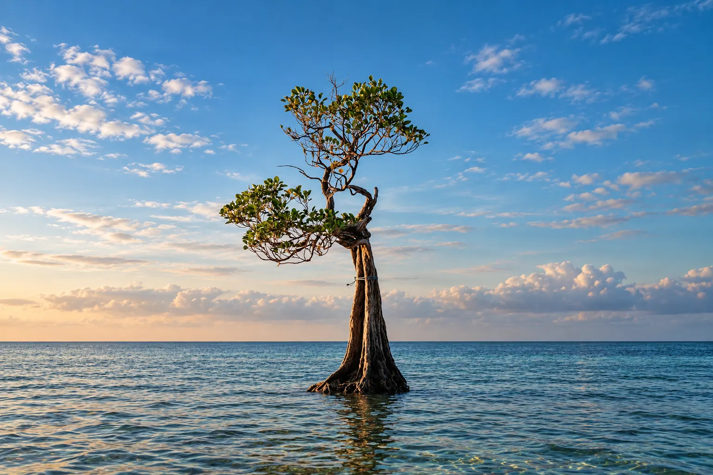

Why this place
Melolo is less a destination in itself than a convenient crossing point in the southeast of the island — close to the village of Praiyawang and its textile crafts, and the river mouth where our wildlife observation boat trip takes place.

A little history
According to an ancient belief, the island of Sumba is kept out of the waves by a bundle of warp threads suspended in the sky - this is why ikat weaving is traditionally not practiced in the West or in the Center, but only in the East, around Melolo: weaving elsewhere would symbolically break this thread which supports the island. In neighboring villages, it is often women, sometimes men, who perpetuate this know-how - natural dyeing, spinning, patterns representing horses, ancestors and mythical creatures, each pattern carrying a precise meaning. The mamuli, a traditional jewel in the shape of a split ring, also appears frequently in the designs: it symbolizes the mother figure in the local animist tradition, and remains one of the most recognizable symbols of Sumbanese crafts.
Count around 1 million IDR for a handmade ikat of decent quality, and up to 6 million IDR for the most accomplished pieces — a completely handmade weave often requires several weeks of work. Faster versions, partly made by machine, remain less expensive but lose most of their artisanal value. Beyond everyday clothing, the ikat retains a strong ritual value: offered during weddings and Marapu ceremonies, it also serves as a shroud for high-ranking people, whose bodies can be wrapped in several fabrics during funerals.
How to get there
Several hours' drive from Waingapu, on the southeast coast.

Associated service
Boat — Sumba crocodile excursion
To combine with your Praiyawang visit.
What to do there
Good to know
Few formal accommodation on site — this area is most often visited as a day trip from Waingapu rather than spending the night. In certain weaving villages in the area, it is possible to try on a traditional ikat fabric for a souvenir photo.